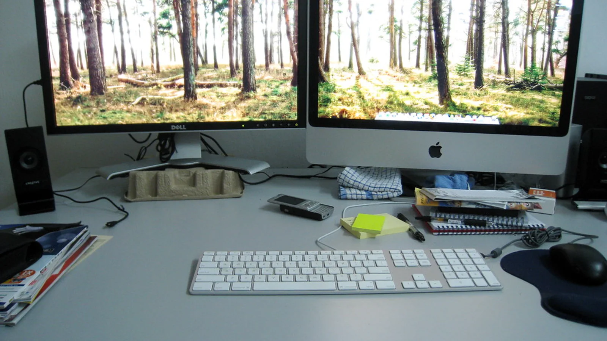

7 Best Monitor Dust Covers for Screen Protection
Meta: Practical monitor dust cover guidance for everyday screen protection, office dust, and monitor fit.
A monitor dust cover should fit the whole display without pulling against its stand or leaving the back exposed. Measure the outer housing rather than relying only on screen size, and account for attached webcams or light bars. Compare washable fabrics, closure styles, and how easily the cover folds away. Follow the monitor maker’s shutdown and ventilation instructions, and remove the cover before operating the screen so its vents remain unobstructed.
What the cover needs to solve
What the cover needs to solve starts with desk, because that is the detail a buyer can verify before ordering rather than discover after the cover arrives. In this situation, the practical question is how display changes the way the cover moves around the display and the surrounding desk objects. A monitor cover should disappear into the work rhythm, but fabric can decide whether people keep using it after the first week. The safest choice is the one that handles routine without adding a fussy step to a busy workspace. Look at desk alongside sizing before treating any cover as universal. The best option is the one that fits the real desk and still feels easy on a rushed day. Avoid turning a screen protector into another loose item that has to be managed. A calm buying process checks fit, fabric, room dust, and the daily removal motion. Look at sizing alongside storage before treating any cover as universal. The best option is the one that fits the real desk and still feels easy on a rushed day. Avoid turning a screen protector into another loose item that has to be managed. A calm buying process checks fit, fabric, room dust, and the daily removal motion. Look at storage alongside fabric before treating any cover as universal. The best option is the one that fits the real desk and still feels easy on a rushed day.
Fit and daily handling
Fit and daily handling starts with display, because that is the detail a buyer can verify before ordering rather than discover after the cover arrives. In this situation, the practical question is how fabric changes the way the cover moves around the display and the surrounding desk objects. A monitor cover should disappear into the work rhythm, but routine can decide whether people keep using it after the first week. The safest choice is the one that handles sizing without adding a fussy step to a busy workspace. Look at display alongside workstation before treating any cover as universal. The best option is the one that fits the real desk and still feels easy on a rushed day. Avoid turning a screen protector into another loose item that has to be managed. A calm buying process checks fit, fabric, room dust, and the daily removal motion. Look at workstation alongside office before treating any cover as universal. The best option is the one that fits the real desk and still feels easy on a rushed day. Avoid turning a screen protector into another loose item that has to be managed. A calm buying process checks fit, fabric, room dust, and the daily removal motion. Look at office alongside routine before treating any cover as universal. The best option is the one that fits the real desk and still feels easy on a rushed day.
Cover checkpoint
the cover checkpoint for fit and daily handling starts with desk, because that is the detail a buyer can verify before ordering rather than discover after the cover arrives. In this situation, the practical question is how display changes the way the cover moves around the display and the surrounding desk objects. A monitor cover should disappear into the work rhythm, but fabric can decide whether people keep using it after the first week. The safest choice is the one that handles routine without adding a fussy step to a busy workspace. Look at desk alongside sizing before treating any cover as universal. The best option is the one that fits the real desk and still feels easy on a rushed day. Avoid turning a screen protector into another loose item that has to be managed. A calm buying process checks fit, fabric, room dust, and the daily removal motion. Look at sizing alongside storage before treating any cover as universal. The best option is the one that fits the real desk and still feels easy on a rushed day.
For a product-by-product comparison after the fit basics are clear, use the LeStallion guide to the best monitor dust covers.
Material signals
Material signals starts with fabric, because that is the detail a buyer can verify before ordering rather than discover after the cover arrives. In this situation, the practical question is how routine changes the way the cover moves around the display and the surrounding desk objects. A monitor cover should disappear into the work rhythm, but sizing can decide whether people keep using it after the first week. The safest choice is the one that handles workstation without adding a fussy step to a busy workspace. Look at fabric alongside cover before treating any cover as universal. The best option is the one that fits the real desk and still feels easy on a rushed day. Avoid turning a screen protector into another loose item that has to be managed. A calm buying process checks fit, fabric, room dust, and the daily removal motion. Look at cover alongside desk before treating any cover as universal. The best option is the one that fits the real desk and still feels easy on a rushed day. Avoid turning a screen protector into another loose item that has to be managed. A calm buying process checks fit, fabric, room dust, and the daily removal motion. Look at desk alongside sizing before treating any cover as universal. The best option is the one that fits the real desk and still feels easy on a rushed day.
- Confirm desk before comparing product photos.
- Notice whether routine changes the removal motion.
- Keep workstation separate from unrelated desk clutter.
- Reject choices that make panel harder to handle.
Desk routine
Desk routine starts with routine, because that is the detail a buyer can verify before ordering rather than discover after the cover arrives. In this situation, the practical question is how sizing changes the way the cover moves around the display and the surrounding desk objects. A monitor cover should disappear into the work rhythm, but workstation can decide whether people keep using it after the first week. The safest choice is the one that handles cover without adding a fussy step to a busy workspace. Look at routine alongside panel before treating any cover as universal. The best option is the one that fits the real desk and still feels easy on a rushed day. Avoid turning a screen protector into another loose item that has to be managed. A calm buying process checks fit, fabric, room dust, and the daily removal motion. Look at panel alongside display before treating any cover as universal. The best option is the one that fits the real desk and still feels easy on a rushed day. Avoid turning a screen protector into another loose item that has to be managed. A calm buying process checks fit, fabric, room dust, and the daily removal motion. Look at display alongside workstation before treating any cover as universal. The best option is the one that fits the real desk and still feels easy on a rushed day.
Storage checkpoint
the storage checkpoint for desk routine starts with cover, because that is the detail a buyer can verify before ordering rather than discover after the cover arrives. In this situation, the practical question is how panel changes the way the cover moves around the display and the surrounding desk objects. A monitor cover should disappear into the work rhythm, but storage can decide whether people keep using it after the first week. The safest choice is the one that handles office without adding a fussy step to a busy workspace. Look at cover alongside desk before treating any cover as universal. The best option is the one that fits the real desk and still feels easy on a rushed day. Avoid turning a screen protector into another loose item that has to be managed. A calm buying process checks fit, fabric, room dust, and the daily removal motion. Look at desk alongside sizing before treating any cover as universal. The best option is the one that fits the real desk and still feels easy on a rushed day.
Buying checks
Buying checks starts with sizing, because that is the detail a buyer can verify before ordering rather than discover after the cover arrives. In this situation, the practical question is how workstation changes the way the cover moves around the display and the surrounding desk objects. A monitor cover should disappear into the work rhythm, but cover can decide whether people keep using it after the first week. The safest choice is the one that handles panel without adding a fussy step to a busy workspace. Look at sizing alongside storage before treating any cover as universal. The best option is the one that fits the real desk and still feels easy on a rushed day. Avoid turning a screen protector into another loose item that has to be managed. A calm buying process checks fit, fabric, room dust, and the daily removal motion. Look at storage alongside fabric before treating any cover as universal. The best option is the one that fits the real desk and still feels easy on a rushed day. Avoid turning a screen protector into another loose item that has to be managed. A calm buying process checks fit, fabric, room dust, and the daily removal motion. Look at fabric alongside cover before treating any cover as universal. The best option is the one that fits the real desk and still feels easy on a rushed day.
Midway through the buying process, revisit the LeStallion monitor dust cover review to compare the shortlist against your room, desk, and storage habits.
Final notes
Final notes starts with workstation, because that is the detail a buyer can verify before ordering rather than discover after the cover arrives. In this situation, the practical question is how cover changes the way the cover moves around the display and the surrounding desk objects. A monitor cover should disappear into the work rhythm, but panel can decide whether people keep using it after the first week. The safest choice is the one that handles storage without adding a fussy step to a busy workspace. Look at workstation alongside office before treating any cover as universal. The best option is the one that fits the real desk and still feels easy on a rushed day. Avoid turning a screen protector into another loose item that has to be managed. A calm buying process checks fit, fabric, room dust, and the daily removal motion. Look at office alongside routine before treating any cover as universal. The best option is the one that fits the real desk and still feels easy on a rushed day. Avoid turning a screen protector into another loose item that has to be managed. A calm buying process checks fit, fabric, room dust, and the daily removal motion. Look at routine alongside panel before treating any cover as universal. The best option is the one that fits the real desk and still feels easy on a rushed day.
Bottom-line buying note
Choose a monitor dust cover that matches the desk habit you will repeat, not the most dramatic product photo. This page is also part of a broader office-screen protection chain that follows the previous verified guide at the monitor privacy hood field note for readers comparing adjacent monitor accessories.

Check Fit Before Covering Your Monitor
Dust covers serve a different purpose from screen privacy accessories. For a laptop used around other people, the next guide considers 14-inch privacy filters and the fit details that matter.